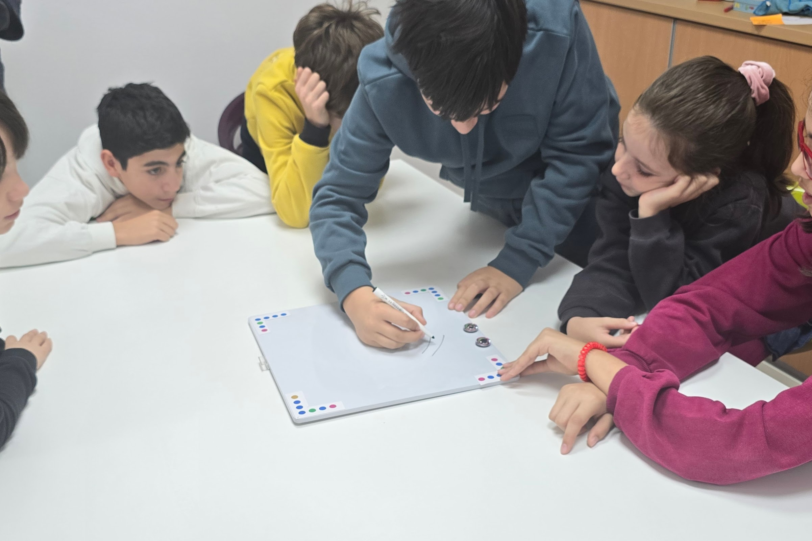
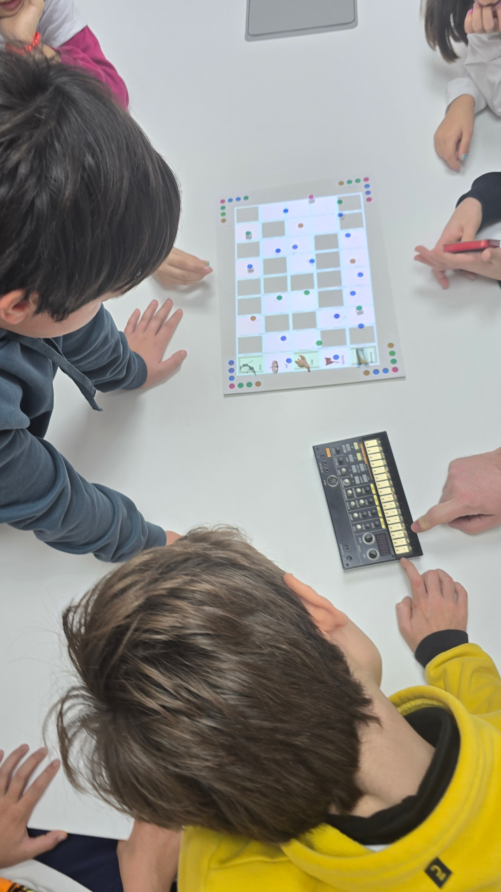
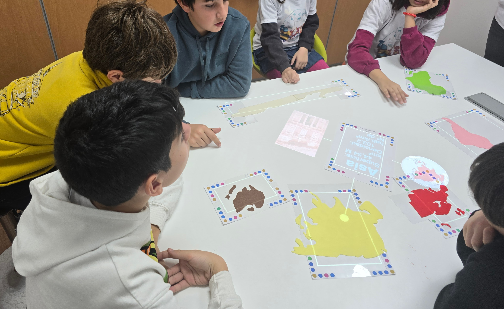
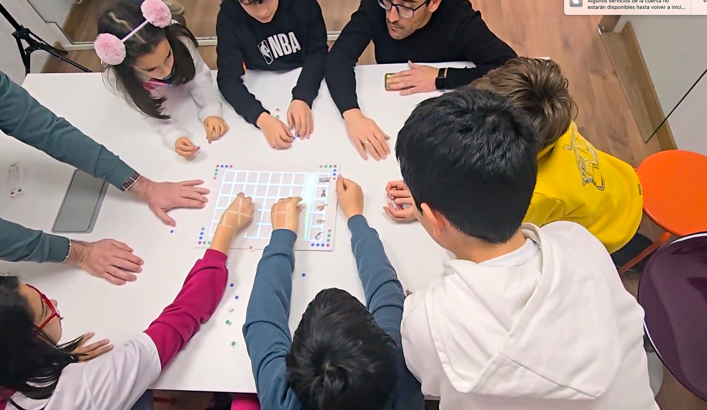

Transforma objetos del mundo real en herramientas interactivas de aprendizaje

DynaClassroom es un entorno de aprendizaje para que estudiantes y docentes puedan explorar cualquier idea juntos, dotando de comportamiento computacional a los objetos del mundo real.
Tecnología que cobra vida en el mundo real
En DynaClassroom, la tecnología deja atrás las pantallas para cobrar vida en tus manos. Aquí, los ordenadores no solo procesan datos; conectan con objetos físicos que puedes tocar, mover y explorar en el mundo real.
Desde papeles hasta manualidades, cualquier objeto se convierte en una herramienta educativa interactiva.

Los programas de ordenador ahora son tangibles.

Los objetos reales tienen propiedades para inspirar aprendizaje y creatividad.

Aprender creando: el poder está en tus manos
En DynaClassroom, rompemos con la idea de que la computación significa ser un consumidor pasivo de herramientas. Aquí, los estudiantes son creadores activos, diseñando, explorando y reinventando su propio conocimiento.
Los estudiantes construyen, experimentan y dan forma a su propio conocimiento.
Un entorno abierto diseñado para aprender explorando, probando y creando sin límites.
Todo es visible, comprensible y modificable. Aquí, el conocimiento es abierto para aprender y transformar.

Usa Kits creados por otros, modifícalos, combínalos o diseña los tuyos propios. Tú decides cómo aprender.
El software NO necesita programadores: aquí, los usuarios lo crean para explorar y aprender sobre cualquier tema.
Computación práctica para cualquier asignatura
DynaClassroom es la clave para integrar la computación de manera práctica en cualquier asignatura o tema. Más que enseñar programación, se trata de conectar el pensamiento computacional con el aprendizaje real y significativo.
Va más allá de enseñar a programar: es un espacio para aplicar la computación al aprendizaje práctico.
NO es una clase tradicional de informática o programación. Es un complemento que amplía las posibilidades de aprendizaje en cualquier contexto.

Aplica el pensamiento computacional de forma transversal en todas las materias y actividades, integrándolo al aprendizaje cotidiano.
Aprender juntos: exploración y colaboración
DynaClassroom transforma el aprendizaje en una experiencia compartida. Fomenta la participación activa, la colaboración y la exploración en grupo, donde los estudiantes descubren y aprenden juntos.
El aprendizaje deja de ser solitario: los estudiantes comparten, interactúan y trabajan juntos, lejos de las pantallas individuales.

Se crean dinámicas de grupo que inspiran colaboración, integración y aprendizaje colectivo.
Ex3 = Experimentar, Explorar y Expresarse, conectando ideas y personas de manera colaborativa y fluida.
